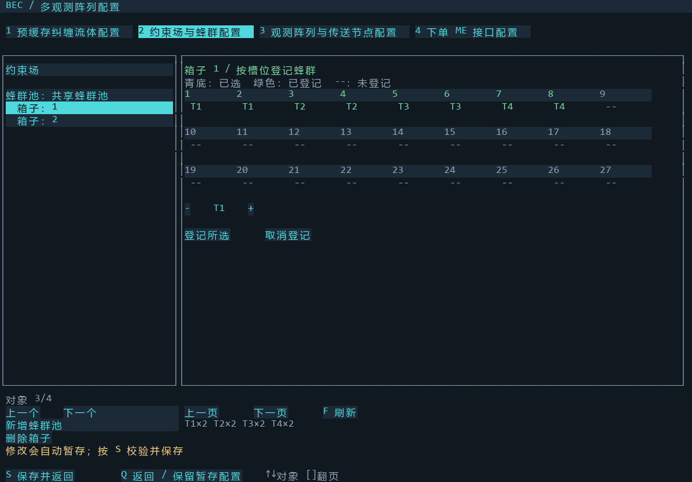
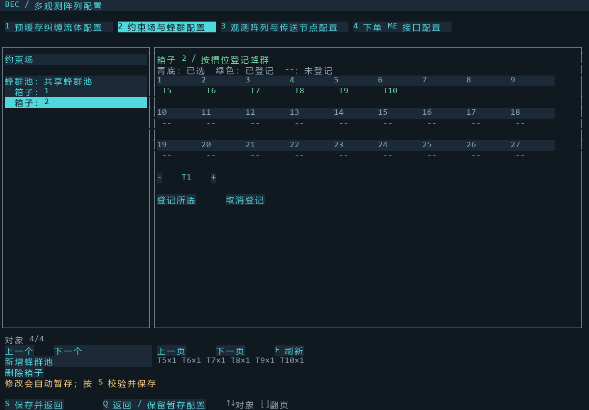
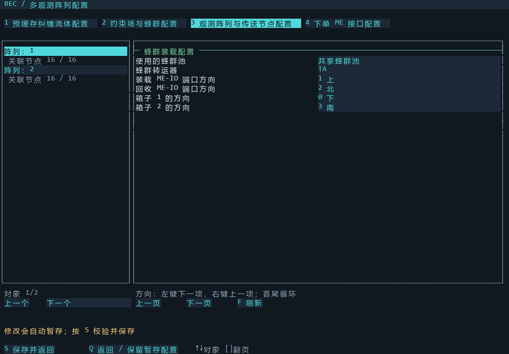

| 箱子 | 颜色示例 | 槽位与等级 |
|---|---|---|
| 1 | 白／白／白 | 1–8，T1–T4 各两套 |
| 2 | 白／白／红 | 1–6，T5–T10 各一套 |
每个槽位放一颗对应等级的蜂群元件。选择槽位后登记等级，登记完成会清空选择。


每台都放相同所有者、相同频率的两个箱子，共用本阵列自己的装载与回收 ME-IO 端口。示例：箱子 1 在下方，装载在上方，回收在北方，箱子 2 在南方；实际以转运器方向为准。

只借当前步骤所需蜂群，用完归还，再请求下一等级。同一颗元件不会同时借给两台阵列。池内暂时没有空闲套装不妨碍派单，但阵列会等待对应等级。示例套数不是产能保证。